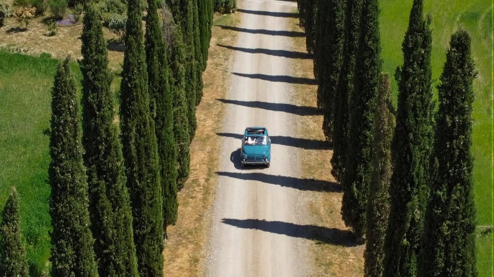
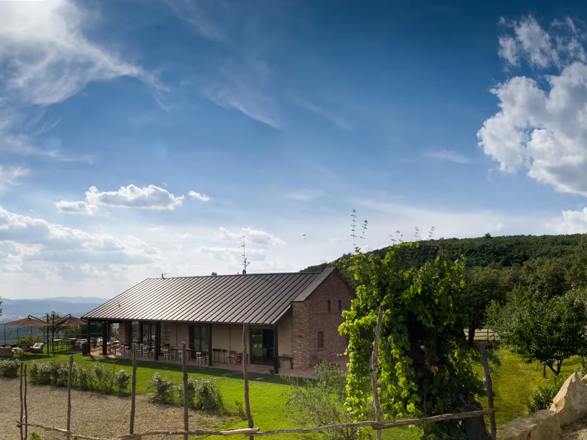
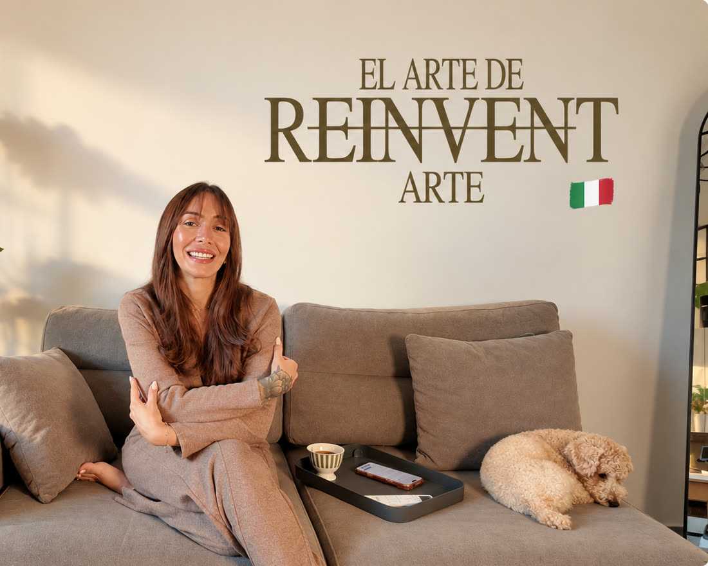
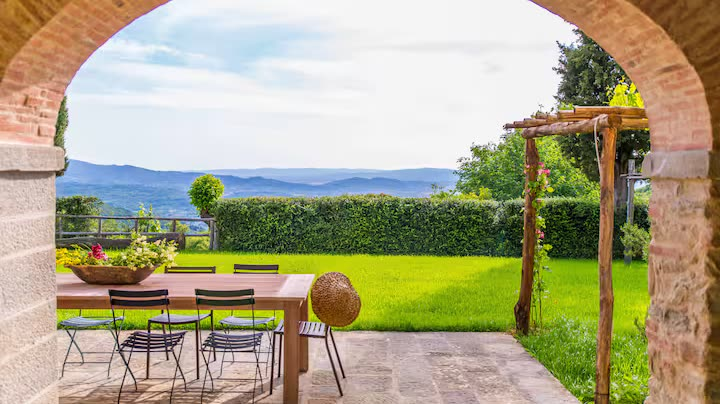

Introspección
Journaling guiado y conversaciones que llegan al fondo sin apuro.
Retiro privado · Diez mujeres
Viernes 2, Sábado 3 y Domingo 4 de octubre
2026Toscana
3 días para reinventarte: 3 días para soltar lo que pesa, ver lo que estaba en sombra y volver con las decisiones que vienes postergando (esas que cambian la vida).
Quiero vivirloHas construido una vida que “funciona”. Cumples, resuelves, avanzas.
pero hace tiempo que ya no te representa.
¿Te gusta tu versión del futuro?
Reinventarte no significa borrar lo vivido. Significa aprender a empezar de nuevo con todo lo que ya sabes de ti.
Solo piensa: si todo siguiera igual durante los próximos años, ¿serías feliz?

Soltar para escucharte.
Dejar de distraerte de ti, aunque incomode. Es el día en que el silencio empieza a hablar.

Ver tu verdad.
Lo que permanecía en la sombra aparece aquí. Para transformarse con orden y con libertad.

Elegirte desde el amor.
El día en que dejas de postergarte. Te eliges e inicias el movimiento hacia tu nueva versión.
Quizás llevas tiempo sintiendo que algo dentro de ti está cambiando.
Puede que haya ocurrido algo grande. Una migración. Una separación. La maternidad. Un cambio profesional. Una pérdida. Una nueva etapa.
O puede que desde afuera todo parezca estar bien. Sigues trabajando, resolviendo, cuidando, cumpliendo. Pero por dentro sabes que algo ya no se siente igual.
Y empiezas a hacerte preguntas que llevabas mucho tiempo evitando.
El Arte de Reinventarte nace para darte el espacio de escucharlas.
Lo que vas a vivir
Una experiencia íntima de transformación para mujeres que están entrando en una nueva etapa. Durante tres días sales de tu rutina para vivir un proceso acompañado por diferentes herramientas, experiencias y facilitadoras.
Journaling guiado y conversaciones que llegan al fondo sin apuro.
Experiencias corporales para salir de la cabeza y volver al cuerpo.
Ver los patrones que se repiten desde una perspectiva nueva. Orden y liberación.
Espacios de reflexión, de silencio y de integración real.
Nueve mujeres más, todas en un momento de cambio. Nadie llega a mirar desde afuera.
Naturaleza, gastronomía local, viñedos y experiencias sensoriales entre colinas.
El refugio
Una casa de piedra entre las colinas doradas de la Toscana. Piscina, jardín de olivos, comedor bajo los arcos y habitaciones compartidas de máximo dos mujeres. Toscana no es el escenario de esta experiencia: es parte de ella.



Desliza para ver más →
La diferencia
Existe una intención detrás de cada momento.
Diez mujeres. La experiencia está diseñada para mantener cercanía, acompañamiento y conexión real.
Todo sigue un mismo recorrido: soltar, ver, elegir.
Movimiento, introspección, mirada sistémica, consciencia y experiencias sensoriales dentro de un mismo proceso.
Villa, alimentación, traslados desde Florencia, experiencias, materiales, facilitadoras y detalles están integrados para que solo tengas que vivir esos días.
No vienes únicamente a encontrarte contigo. También a compartir con mujeres que están cuestionándose, creciendo y construyendo nuevas etapas.
Lo práctico
Antes de escribirnos
Te ahorramos un viaje innecesario y nos ahorramos una conversación incómoda. Léelo con honestidad.
Quiénes te acompañan
Hemos unido nuestras experiencias para sostenerte desde todas tus dimensiones: cuerpo, mente y alma.

Sistémica & conciencia
Procesos sistémicos y expansión de conciencia. Te acompaña a recordar quién eres más allá de tu historia, para transformar tus bloqueos en puentes hacia una vida más plena.
@rosarodrigues11_11
Decisión & dirección
Creadora de El Arte de Reinventarte. Migraciones, cambios profesionales y varios comienzos: ha vivido la reinvención en su propia historia. Te acompaña a decidir con claridad y verdad.
@egdaelena
Cuerpo & regulación
Movimiento consciente y regulación emocional. Te ayuda a salir de la cabeza y volver al cuerpo, conectando con tu espiritualidad y tu fe.
@fabianaconstanza_Sobre Egda

El Arte de Reinventarte nace de la propia historia de reinvención de Egda Elena Padrón, creadora de contenido, empresaria y fundadora del proyecto.
Después de vivir diferentes países, migraciones, cambios profesionales, maternidad y múltiples comienzos, Egda empezó a documentar una nueva etapa de su vida a través de Reinventando mi vida en Italia. De ahí nació una conversación mucho más grande: miles de mujeres se vieron reflejadas en la misma pregunta.
¿Qué haces cuando la vida que conocías cambia y tienes que volver a elegir qué viene después?

Qué te llevas
Te vas con claridad. Entendiendo qué necesitas cambiar. Y con decisiones que ya no vas a seguir postergando.

La inversión
1.399 €Por tu lugar en Toscana. Todo incluido, habitación doble compartida. No incluye vuelos.
Solo 10 lugares
Dudas frecuentes
La mayoría llega sola, y es parte de la experiencia. El grupo se conoce desde el primer círculo y la intimidad se construye en horas, no en días. Te vas de la Toscana habiendo conocido a otras nueve mujeres en un nivel que pocas personas tocan.
No. Hay mujeres que llegan con un cambio importante encima y otras que simplemente sienten que algo está pidiendo movimiento. No necesitas estar mal para querer crecer.
No hace falta. Cada práctica se introduce desde cero y se acompaña paso a paso. Lo único que necesitas es disposición a estar presente y curiosidad por lo que aparezca.
No. Es una experiencia de transformación con facilitadoras profesionales y herramientas concretas, pero no sustituye ningún proceso médico ni psicológico.
Tu único punto de llegada es Florencia (FLR). El traslado de ida y vuelta entre Florencia y la villa está incluido. Una vez confirmada tu plaza coordinamos contigo el punto y la hora exacta del encuentro, así llegamos todas juntas.
Sí. Te preguntamos por restricciones alimentarias antes del viaje y la cocina de la villa adapta cada comida. La gastronomía es local de la Toscana, con producto fresco de la zona.
Sí. Si vienes con alguien que ya conoces puedes decírnoslo y haremos lo posible para asignarlas en la misma habitación, doble y de máximo dos mujeres. Si vienes sola, te emparejamos por afinidad.
Seguimos la conversación por WhatsApp para conocerte, resolver tus dudas y acompañarte en los siguientes pasos. Escribirnos no reserva automáticamente tu plaza: el lugar se confirma con el depósito.
Comunidad de interés
Déjanos tus datos y forma parte de nuestra Comunidad de interés de El Arte de Reinventarte. Te mantendremos al tanto de próximas experiencias, retiros, encuentros, novedades y nuevas formas de ser parte de este universo.
Ya eres parte 🤎
Gracias por sumarte a la Comunidad de interés de El Arte de Reinventarte. Serás de las primeras en enterarte de las próximas experiencias, retiros y encuentros, antes de que se abran al público.
Conocer más en @elartereinventarteo escríbenos a info@elartereinventarte.com

Puede que esto haya llegado justo cuando necesitabas volver a preguntarte qué quieres para ti.
Quiero vivirlo